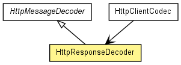

org.jboss.netty.handler.codec.http
Class HttpResponseDecoder
java.lang.Object
 org.jboss.netty.channel.SimpleChannelUpstreamHandler
org.jboss.netty.handler.codec.replay.ReplayingDecoder<HttpMessageDecoder.State>
org.jboss.netty.handler.codec.http.HttpMessageDecoder
org.jboss.netty.handler.codec.http.HttpResponseDecoder
org.jboss.netty.channel.SimpleChannelUpstreamHandler
org.jboss.netty.handler.codec.replay.ReplayingDecoder<HttpMessageDecoder.State>
org.jboss.netty.handler.codec.http.HttpMessageDecoder
org.jboss.netty.handler.codec.http.HttpResponseDecoder
- All Implemented Interfaces:
- ChannelHandler, ChannelUpstreamHandler
public class HttpResponseDecoder
- extends HttpMessageDecoder

Decodes ChannelBuffers into HttpResponses and
HttpChunks.
Parameters that prevents excessive memory consumption
| Name | Meaning |
maxInitialLineLength |
The maximum length of the initial line (e.g. "HTTP/1.0 200 OK")
If the length of the initial line exceeds this value, a
TooLongFrameException will be raised. |
maxHeaderSize |
The maximum length of all headers. If the sum of the length of each
header exceeds this value, a TooLongFrameException will be raised. |
maxChunkSize |
The maximum length of the content or each chunk. If the content length
exceeds this value, the transfer encoding of the decoded response will be
converted to 'chunked' and the content will be split into multiple
HttpChunks. If the transfer encoding of the HTTP response is
'chunked' already, each chunk will be split into smaller chunks if the
length of the chunk exceeds this value. If you prefer not to handle
HttpChunks in your handler, insert HttpChunkAggregator
after this decoder in the ChannelPipeline. |
Decoding a response for a HEAD request
Unlike other HTTP requests, the successful response of a HEAD
request does not have any content even if there is Content-Length
header. Because HttpResponseDecoder is not able to determine if the
response currently being decoded is associated with a HEAD request,
you must override HttpMessageDecoder.isContentAlwaysEmpty(HttpMessage) to return
true for the response of the HEAD request.
If you are writing an HTTP client that issues a HEAD request,
please use HttpClientCodec instead of this decoder. It will perform
additional state management to handle the responses for HEAD
requests correctly.
Decoding a response for a CONNECT request
You also need to do additional state management to handle the response of a
CONNECT request properly, like you did for HEAD. One
difference is that the decoder should stop decoding completely after decoding
the successful 200 response since the connection is not an HTTP connection
anymore.
HttpClientCodec also handles this edge case correctly, so you have to
use HttpClientCodec if you are writing an HTTP client that issues a
CONNECT request.
- Version:
- $Rev: 2225 $, $Date: 2010-03-31 11:19:45 +0900 (Wed, 31 Mar 2010) $
- Author:
- The Netty Project, Andy Taylor (andy.taylor@jboss.org), Trustin Lee
|
Constructor Summary |
HttpResponseDecoder()
Creates a new instance with the default
maxInitialLineLength (4096}, maxHeaderSize (8192), and
maxChunkSize (8192). |
HttpResponseDecoder(int maxInitialLineLength,
int maxHeaderSize,
int maxChunkSize)
Creates a new instance with the specified parameters. |
| Methods inherited from class org.jboss.netty.handler.codec.replay.ReplayingDecoder |
actualReadableBytes, channelClosed, channelDisconnected, checkpoint, checkpoint, decodeLast, exceptionCaught, getState, internalBuffer, messageReceived, setState |
| Methods inherited from class java.lang.Object |
clone, equals, finalize, getClass, hashCode, notify, notifyAll, toString, wait, wait, wait |
HttpResponseDecoder
public HttpResponseDecoder()
- Creates a new instance with the default
maxInitialLineLength (4096}, maxHeaderSize (8192), and
maxChunkSize (8192).
HttpResponseDecoder
public HttpResponseDecoder(int maxInitialLineLength,
int maxHeaderSize,
int maxChunkSize)
- Creates a new instance with the specified parameters.
createMessage
protected HttpMessage createMessage(String[] initialLine)
- Specified by:
createMessage in class HttpMessageDecoder
isDecodingRequest
protected boolean isDecodingRequest()
- Specified by:
isDecodingRequest in class HttpMessageDecoder
Copyright © 2008-2011 JBoss, a division of Red Hat, Inc.. All Rights Reserved.